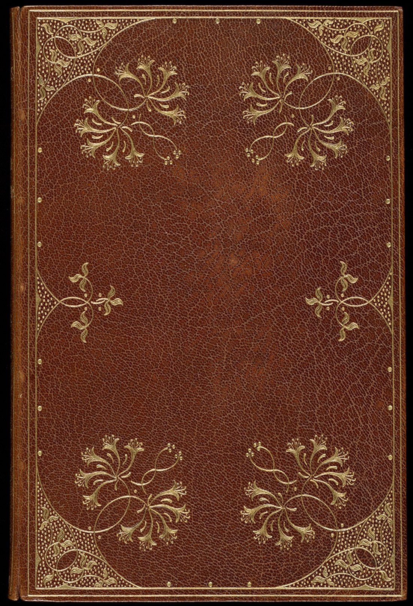
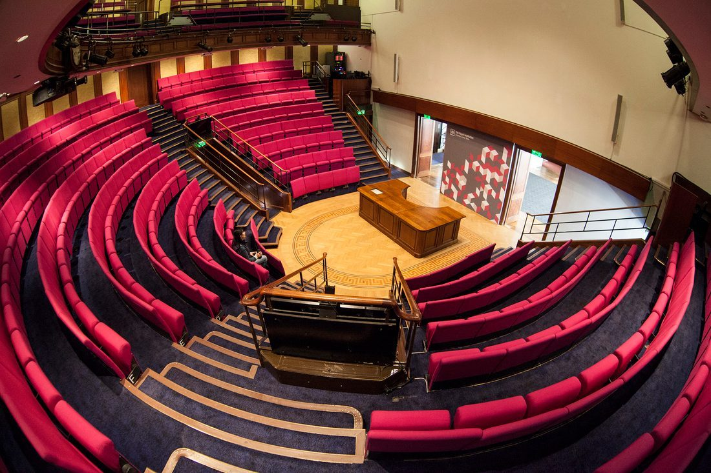
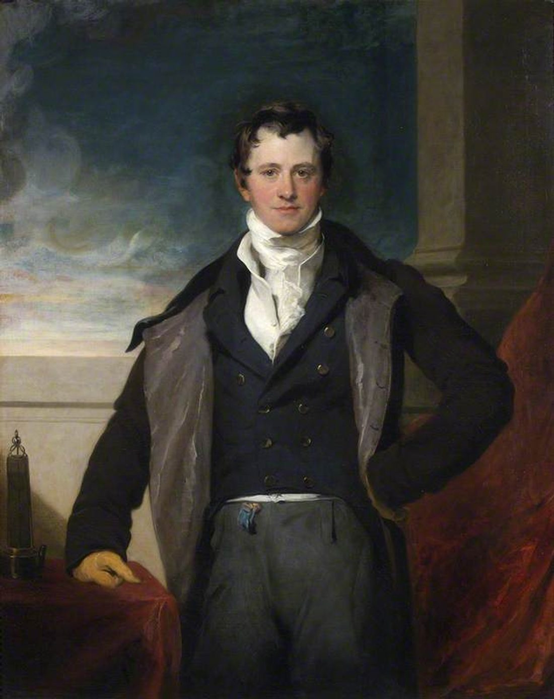
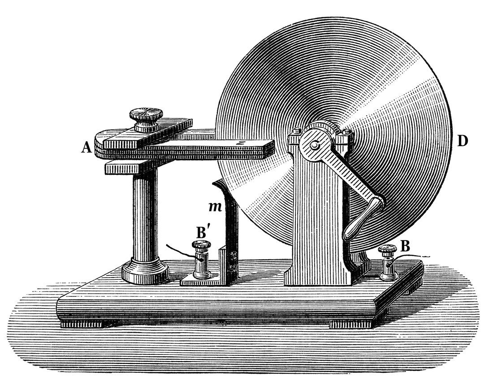
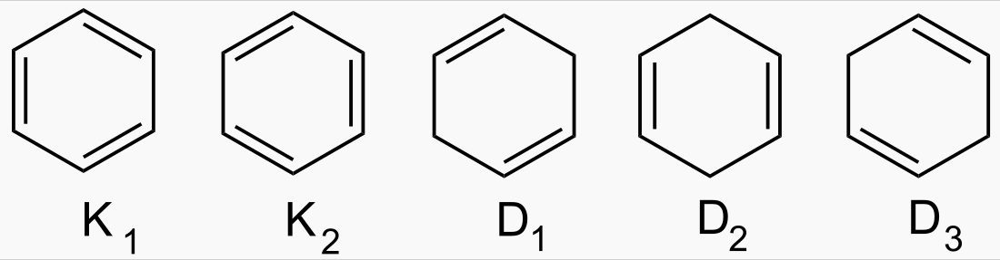
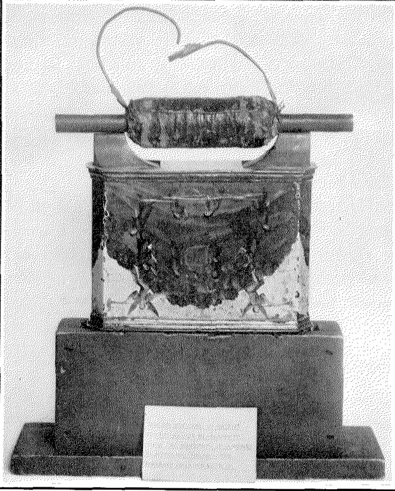
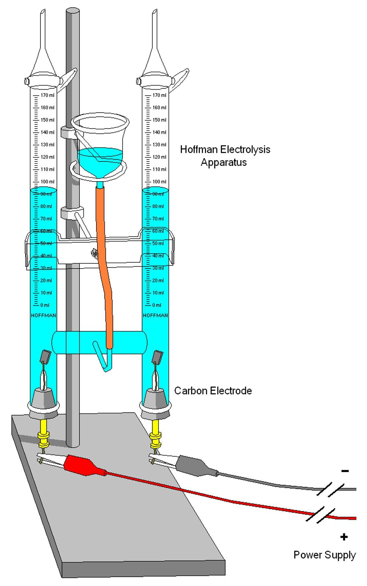
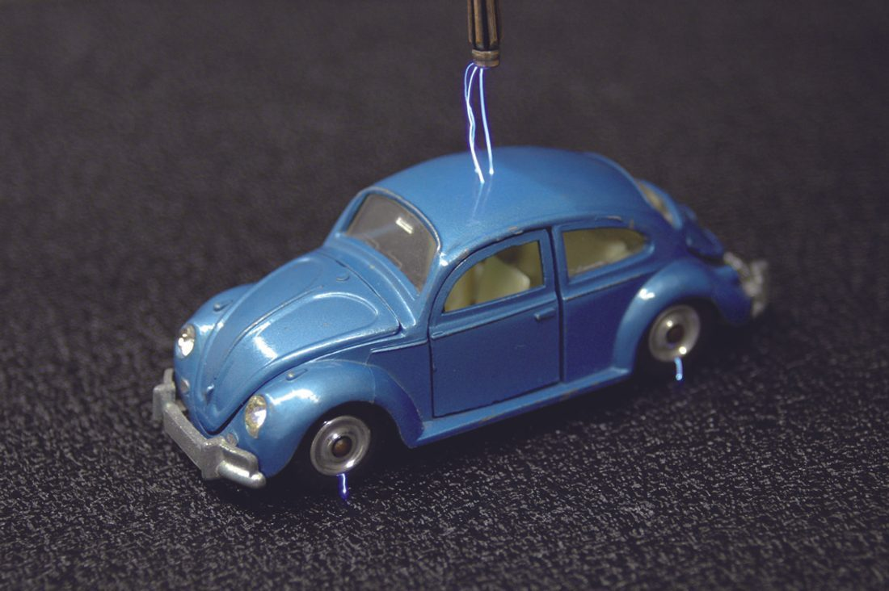

1791
生于伦敦贫寒之家

他出生在伦敦郊区一个铁匠家庭，家中兄弟姐妹四人，父亲常年体弱，家境贫困。
1805
装订铺学徒

他到一家装订铺当学徒。正是在装订的书里，他读到了《大英百科全书》的电学条目与化学书籍，自学起步。
1812
听戴维的讲座

一位顾客送他四张皇家研究所的讲座票，他认真做了笔记，随后把笔记装订成册寄给主讲人戴维，请求一份工作。
1813
成为戴维的助手

他被戴维聘为助手，随其游历欧洲。此后他几乎一生都待在皇家研究所。
1821
电磁旋转

他造出通电导线绕磁铁旋转的装置，这是电动机的雏形，也让他第一次在电磁学上崭露头角。
1825
发现苯

他从照明气的残余油状液体中分离出苯，并测定其组成。同年他出任皇家研究所实验室主任。
1831
发现电磁感应

8 月 29 日，他用铁环实验证明变化的磁能生电；随后又用磁铁插入线圈重复验证，并造出第一台发电机。
1833
电解定律

他提出电解定律，把通过的电量与析出物质的质量定量地联系起来，并创造了沿用至今的一批术语。
1836
法拉第笼

他造出包着金属箔的房间，证明金属外壳能屏蔽外部电场，这就是静电屏蔽与“法拉第笼”。
1855
两次拒绝
他婉拒了皇家学会会长之职，也谢绝了封爵，并拒绝参与为战争研制毒气——理由是那违背他的道德准则。
1867
辞世
8 月 25 日，法拉第在汉普顿宫的住所逝世，享年 75 岁。他谢绝了威斯敏斯特教堂的墓穴，葬于普通墓地。
读电磁感应：磁铁一动，电就来了 → 读力线：他看见了看不见的“场” → 读发电机：把运动变成电 → 读不止电磁：电解、苯与法拉第笼 →